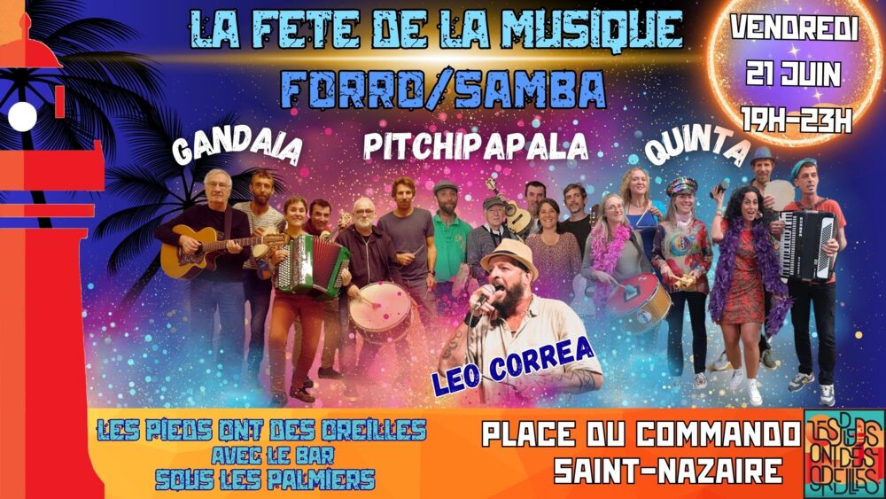

Fête de la musique forró/samba

Lieu : Place du Commando, Saint-Nazaire
Bal forró/samba avec Léo Corrêa, Gandaia na Ponte, Forró da Quinta, Pitchipalapala et jam session. De 19h à 23h, place du Commando.
Vidéos
Les vidéos sont hébergées par YouTube. Elles ne se chargent, et YouTube n'est contacté, qu'au moment où vous cliquez sur lecture.